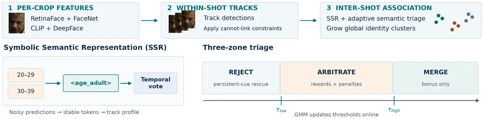

VISTA
Vision-Language Integrated Semantic Triage Architecture for Online Face Clustering in Long Videos
Combining visual identity representations with selective semantic arbitration to resolve ambiguous track-to-cluster associations.
Method & contribution
Designed, implemented, and evaluated the framework, combining visual similarity with semantic evidence in the online clustering workflow.
050100%
+22.79percentage points
over the matched baseline
Source: author-reported camera-ready results. Same detectors, FaceNet embeddings, and evaluation protocol. This is one dataset and metric, not a claim of uniform gains across all benchmarks.
